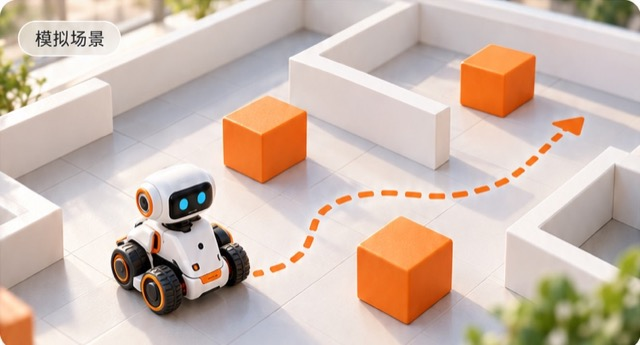

状态：
启动中
试用中
已到期
9:41
●●● ▲ ▮
软件试用
剩余 25:00
图形化编程软件（示例）
示例机器人商家 · 关联 编程机器人探索套装
软件试用 · 隔离环境
不安装到手机
正在启动试用环境
通常需要 30 秒左右（示例），启动好后自动进入软件画面
{{b.t}}
{{b.s}}

软件画面 · 远程串流
连接正常
延迟 38 ms（示例）
作品只在本次试用内有效
试用说明
{{r.t}}
{{overTitle}}
{{overSub}}
本次试用
开始
11/03 14:02
结束
{{overEnd}}
时长
{{overDur}}
再次试用
同一软件的试用间隔按 [协议约定时间]
试用中的作品不保存，环境已销毁；体验结束不会自动下单
本次试用记入“我的体验记录”
查看
取消启动
结束试用
返回体验频道
查看关联商品
结束这次试用？
结束后隔离环境立即销毁，试用中的作品不会保存；剩余的 25 分钟不会保留（示例）。
继续试用
结束试用